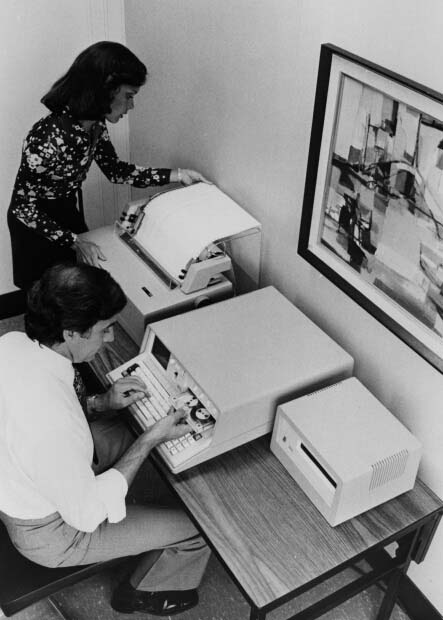
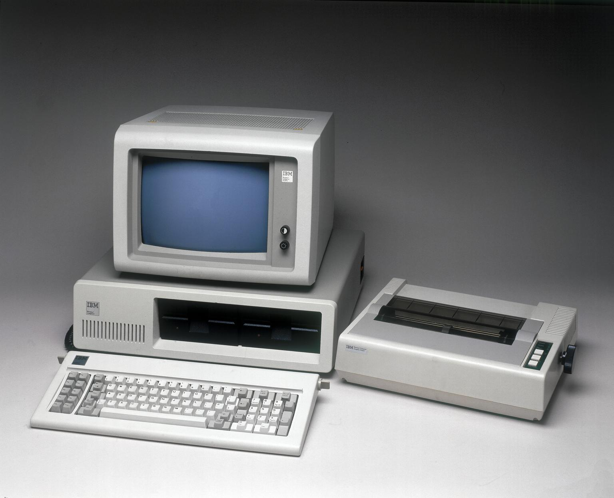
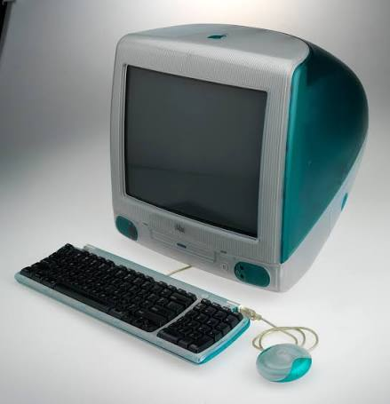
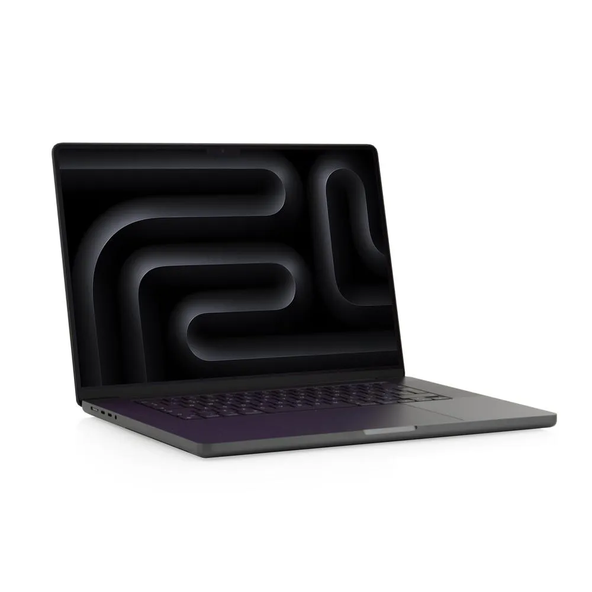
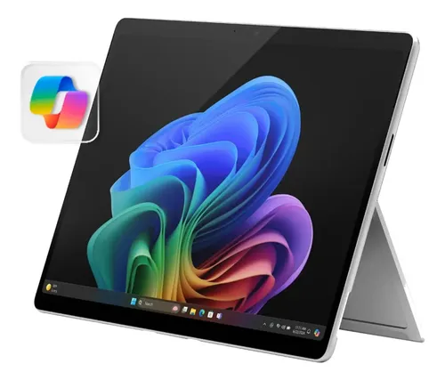

¡Bienvenido al Museo Digital!
Este museo digital te llevará a un viaje por la historia de las computadoras personales (PC), desde sus inicios en 1971 hasta la actualidad.
Aquí podrás:
- Conocer las 5 generaciones de computadoras personales
- Ver imágenes de los computadores más importantes
- Descubrir datos curiosos de cada época
- Jugar y poner a prueba lo que aprendiste con 7 juegos
- Usar la guía docente si eres profesor
Usa el menú de arriba para navegar entre las pestañas.
Las 5 Generaciones de las PC
Primera Generación: Los comienzos (1970 - 1979)

La primera generación de computadoras personales comenzó cuando los avances en electrónica permitieron reducir el tamaño de los computadores. Uno de los cambios más importantes fue la creación del microprocesador, que permitió reunir gran parte de las funciones de procesamiento en un pequeño circuito.
En 1971, Intel presentó el 4004, uno de los primeros microprocesadores comerciales. Durante esta época aparecieron computadores dirigidos principalmente a aficionados, estudiantes y personas interesadas en aprender programación. Muchos equipos se vendían como kits que el usuario debía ensamblar.
Características principales:
- 🔹 Utilizaban microprocesadores
- 🔹 Tenían poca memoria
- 🔹 El almacenamiento era muy limitado
- 🔹 Algunos no tenían monitor ni teclado incorporados
- 🔹 Podían conectarse a televisores
- 🔹 La programación era una actividad muy importante
- 🔹 Eran utilizados para aprender electrónica, programación y realizar cálculos
Computadoras importantes:
- Altair 8800 (1975): Uno de los primeros computadores personales ampliamente conocidos. Se comercializó como un kit.
- Apple I (1976): Desarrollado por Steve Wozniak y comercializado junto con Steve Jobs.
- Apple II (1977): Un computador mucho más completo que tuvo gran importancia en la expansión de la computación personal.
¿Qué aportó esta generación? Iniciar la era de la computadora personal, desarrollar la programación doméstica, los primeros videojuegos para computadores y nuevos dispositivos de almacenamiento.
Segunda Generación: La popularización (1980 - 1989)

Durante los años 80, las computadoras personales tuvieron un crecimiento muy importante. Los fabricantes comenzaron a crear equipos destinados a empresas, colegios y hogares, no solamente a aficionados.
Los procesadores fueron mejorando y aparecieron equipos con mayor memoria y capacidad de almacenamiento. También se desarrollaron sistemas operativos que facilitaron el manejo de los computadores. Uno de los acontecimientos más importantes fue el lanzamiento del IBM PC en 1981.
Características principales:
- 🔹 Procesadores más rápidos
- 🔹 Mayor memoria RAM
- 🔹 Disquetes para guardar información
- 🔹 Aparición de discos duros en computadores personales
- 🔹 Monitores con mejores gráficos
- 🔹 Mayor cantidad de programas
- 🔹 Desarrollo de videojuegos
- 🔹 Uso de sistemas operativos como MS-DOS
- 🔹 Mayor presencia de computadores en oficinas y colegios
- 🔹 Comienzo de interfaces gráficas más fáciles de utilizar
Computadoras importantes:
- IBM PC (1981): Se convirtió en una referencia para numerosos computadores compatibles.
- Commodore 64 (1982): Tuvo gran popularidad en los hogares y fue utilizado para programación y videojuegos.
- Macintosh (1984): Apple presentó una computadora que utilizaba una interfaz gráfica y un mouse.
¿Qué aportó esta generación? Ayudó a convertir el computador en una herramienta para trabajar, estudiar, escribir documentos, hacer cálculos y jugar. También permitió que muchas más personas comenzaran a aprender informática.
Tercera Generación: Multimedia e Internet (1990 - 1999)

Durante los años 90 las computadoras personales tuvieron un gran crecimiento tecnológico. Los procesadores aumentaron considerablemente su velocidad y los discos duros permitieron guardar mucha más información.
También aparecieron computadores preparados para trabajar con imágenes, sonidos, videos y videojuegos. Por esta razón se empezó a hablar de computadores multimedia.
Características principales:
- 🔹 Procesadores más rápidos
- 🔹 Mayor capacidad de memoria RAM
- 🔹 Discos duros de mayor capacidad
- 🔹 Monitores a color
- 🔹 Mejores tarjetas gráficas
- 🔹 Tarjetas de sonido
- 🔹 Lectores de CD-ROM
- 🔹 Mayor calidad en videojuegos
- 🔹 Programas multimedia
- 🔹 Expansión de Internet
- 🔹 Sistemas operativos con interfaces gráficas más completas
Procesadores importantes: Intel 386, 486 y Pentium.
Sistemas operativos: Windows 95 (1995) y Windows 98.
¿Qué aportó esta generación? El computador pasó a ser una herramienta para trabajo, educación, comunicación, entretenimiento y acceso a información. La llegada de Internet y los CD-ROM permitió almacenar y consultar grandes cantidades de información.
Cuarta Generación: Computadores más rápidos y conectados (2000 - 2010)

Durante los primeros años del siglo XXI, las computadoras personales continuaron aumentando su capacidad. Los procesadores comenzaron a incorporar varios núcleos, permitiendo realizar diferentes tareas con mayor eficiencia.
También se hicieron cada vez más comunes los computadores portátiles, que permiten trabajar y estudiar sin estar siempre conectados a un escritorio. La conexión a Internet evolucionó con las redes inalámbricas (Wi-Fi).
Características principales:
- 🔹 Procesadores multinúcleo
- 🔹 Mayor cantidad de memoria RAM
- 🔹 Discos duros con mucha más capacidad
- 🔹 Aparición y expansión de los SSD
- 🔹 Pantallas LCD
- 🔹 Computadores portátiles
- 🔹 Conexiones Wi-Fi
- 🔹 Bluetooth
- 🔹 Mejores tarjetas gráficas
- 🔹 Internet de mayor velocidad
- 🔹 Mayor cantidad de programas y servicios en línea
¿Qué desarrollaron? Cámaras web, memorias USB, servicios de almacenamiento y aplicaciones en Internet, smartphones cada vez más avanzados.
¿Qué aportó esta generación? La computadora se convirtió en una herramienta móvil y conectada. Se utilizó cada vez más para estudiar, trabajar, comunicarse, compartir archivos, utilizar redes sociales y acceder a servicios por Internet.
Quinta Generación: Inteligencia artificial y computación inteligente (2010 - actualidad)

La quinta generación representa la etapa actual de la evolución de los computadores. No existe una fecha única y oficial para el comienzo de esta generación, pero se caracteriza por tecnologías como la inteligencia artificial, computación en la nube, aprendizaje automático e Internet de las cosas.
Los computadores actuales pueden procesar enormes cantidades de información y realizar tareas que anteriormente requerían mucha intervención humana.
Características principales:
- 🔹 Procesadores de gran capacidad
- 🔹 Grandes cantidades de memoria y almacenamiento
- 🔹 Inteligencia artificial
- 🔹 Aprendizaje automático
- 🔹 Computación en la nube
- 🔹 Internet de alta velocidad
- 🔹 Dispositivos inteligentes
- 🔹 Reconocimiento de voz
- 🔹 Reconocimiento de imágenes
- 🔹 Automatización de tareas
- 🔹 Procesadores especializados para inteligencia artificial
- 🔹 Integración entre computadores, celulares y otros dispositivos
¿Qué se ha desarrollado?
- Inteligencia artificial: Sistemas capaces de analizar información y generar respuestas.
- Asistentes virtuales: Sistemas que responden preguntas y reconocen comandos de voz.
- Computación en la nube: Permite almacenar y usar información mediante Internet.
- Internet de las cosas (IoT): Conecta objetos y dispositivos a Internet.
- Procesadores para IA: Chips diseñados para tareas de inteligencia artificial.
¿Qué aportó esta generación? La computadora pasó de ser solamente una máquina que ejecuta instrucciones a convertirse en una herramienta capaz de analizar información, reconocer patrones, automatizar tareas y trabajar con inteligencia artificial.
📊 Comparación de las Generaciones
| Generación | Periodo | Tecnología destacada | ¿Qué aportó? |
|---|---|---|---|
| Primera | 1970-1979 | Microprocesadores | Nacimiento de la computadora personal |
| Segunda | 1980-1989 | PC y sistemas operativos | Popularización de los computadores |
| Tercera | 1990-1999 | Multimedia e Internet | Computadores para comunicación y entretenimiento |
| Cuarta | 2000-2010 | Multinúcleo, Wi-Fi y portátiles | Computación más rápida, móvil y conectada |
| Quinta | 2010-actualidad | IA, nube e IoT | Computación inteligente y automatización |
📈 Evolución en una sola línea
Microprocesador → Computadora personal → Sistemas operativos → Multimedia → Internet → Portátiles → Wi-Fi → Smartphones → Nube → Inteligencia artificial
ZONA DE JUEGOS
Pon a prueba lo que aprendiste con estos 7 juegos:
🎯 Juego 1: Asocia la característica (Nivel Difícil)
Une cada característica con su generación correcta:
❓ Juego 2: Adivina el año (Nivel Difícil)
¿En qué generación ocurrió cada avance?
🧠 Juego 3: Memoria de las PC
Encuentra las parejas de conceptos relacionados:
🧩 Juego 4: Rompecabezas de imágenes
Haz clic en dos piezas para intercambiarlas y armar la imagen:
🔗 Juego 5: Conecta las parejas
Haz clic en un computador y luego en su año correspondiente:
🔤 Juego 6: Sopa de letras
Encuentra las palabras relacionadas con la historia de las PC:
📅 Juego 7: Ordena la línea de tiempo
Arrastra los eventos para ordenarlos cronológicamente:
Datos Curiosos de la Historia de las PC
Dato 1: El IBM 5100
La IBM 5100 pesaba 25 kg y costaba alrededor de $20,000 dólares. ¡Era tan grande que necesitaba una mesa especial!
Dato 2: El IBM PC 5150
El IBM PC 5150 de 1981 costaba $1,565 dólares y tenía solo 16KB de memoria RAM. ¡Hoy un solo correo electrónico pesa más que eso!
Dato 3: El iMac G3
El iMac G3 de 1998 fue el primer computador en tener colores llamativos y vendió más de 6 millones de unidades. Fue diseñado por Steve Jobs.
Dato 4: El MacBook Pro
El primer MacBook Pro de 2006 era tan potente que se usaba para editar películas de Hollywood. Tenía una cámara integrada revolucionaria.
Dato 5: La Quinta Generación
Hoy en día, un teléfono inteligente tiene más poder de cómputo que el computador que llevó al hombre a la Luna en 1969.
Dato 6: El primer mouse
El primer mouse fue inventado por Douglas Engelbart en 1964. Estaba hecho de madera y tenía solo una rueda.
Dato 7: El primer disco duro
El primer disco duro de IBM (1956) pesaba una tonelada y almacenaba solo 5 MB. ¡Hoy un pendrive de 5 MB no existe!
Guía para el docente
¿Cómo usar este museo digital en clase?
- Exploración libre (15 min): Deja que los estudiantes naveguen por las pestañas de generaciones a su propio ritmo.
- Juegos interactivos (20 min): Pide que jueguen en parejas o grupos con los 7 juegos disponibles.
- Datos curiosos (5 min): Que lean los datos curiosos y compartan el que más les llamó la atención.
- Actividad en clase (15 min): Que dibujen cómo creen que serán las PC del futuro.
Objetivos de aprendizaje:
- ✅ Reconocer la evolución de las computadoras personales
- ✅ Identificar avances tecnológicos clave
- ✅ Relacionar tecnología del pasado con la actual
- ✅ Desarrollar pensamiento crítico sobre la tecnología
Competencias que se desarrollan:
- 🧠 Memoria visual (juego de memoria)
- 🔗 Asociación de conceptos (conecta parejas)
- 📅 Comprensión temporal (línea de tiempo)
- 🔤 Vocabulario técnico (sopa de letras)
ℹ️ Acerca del Proyecto
Proyecto: Museo Digital - Historia de las Computadoras Personales
Institución: Institución Educativa Técnica de Firavitoba
Programa: Técnicos en Sistemas Teleinformáticos
Autores: Alejandro Barrera Riveros y José de Jesús Martínez Santiago
Director: Ing. Francisco Orduz Latorre
Año: 2026
Tecnologías: HTML5, CSS3, JavaScript
Dirigido a: Estudiantes de grado quinto de primaria